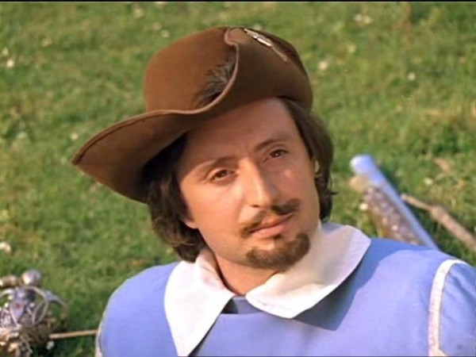

Это моя первая HTML-страница!
Информация о персонаже
- Имя: Оливье
- Фамилия: де Ла Фер
- Псевдоним: Атос
- Годы жзни: 1599-1663
- Титул: граф
- Место службы: Гвардия королевских мушкетёров
- Семья:
Жена: Анна де Бейль- Сын: Рауль де Бражелон
Лучшие друзья
- Шевалье Шарль д’Артаньян
- Аббат Рене Эрбле (Арамис)
- Барон дю Валлон де Брасье де Пьерфон (Портос)
Внешность


Всё, что нам известно о г-не Атосе, описано в
"Воспоминаниях г-на д'Артаньяна"
, найденных в королевской библиотеке.